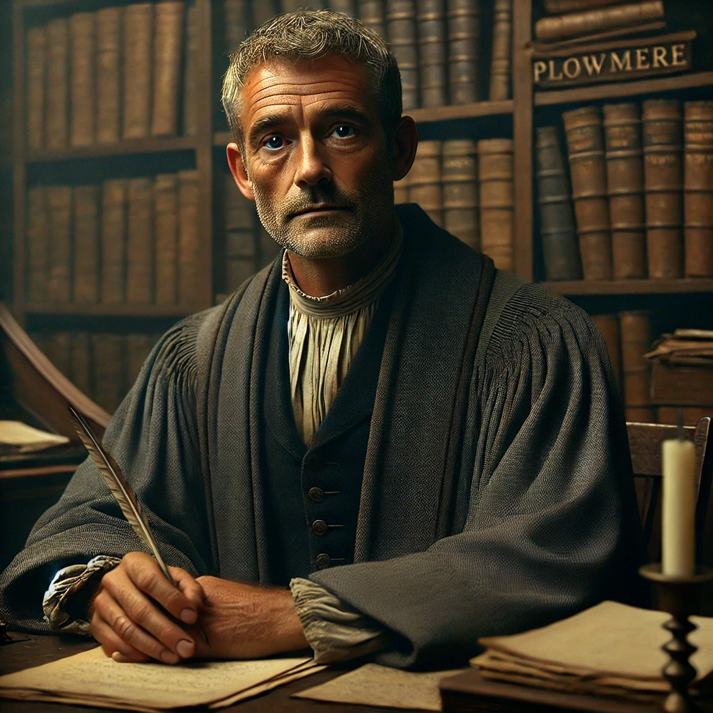
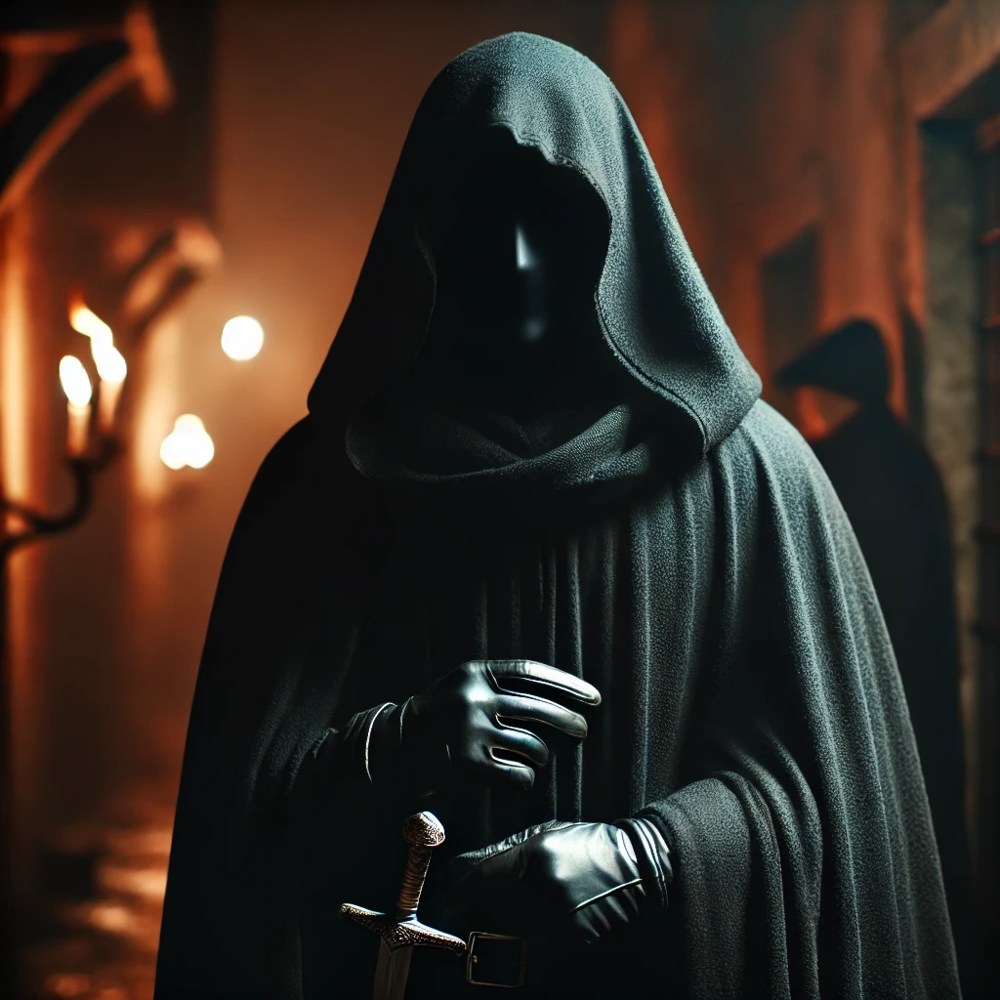
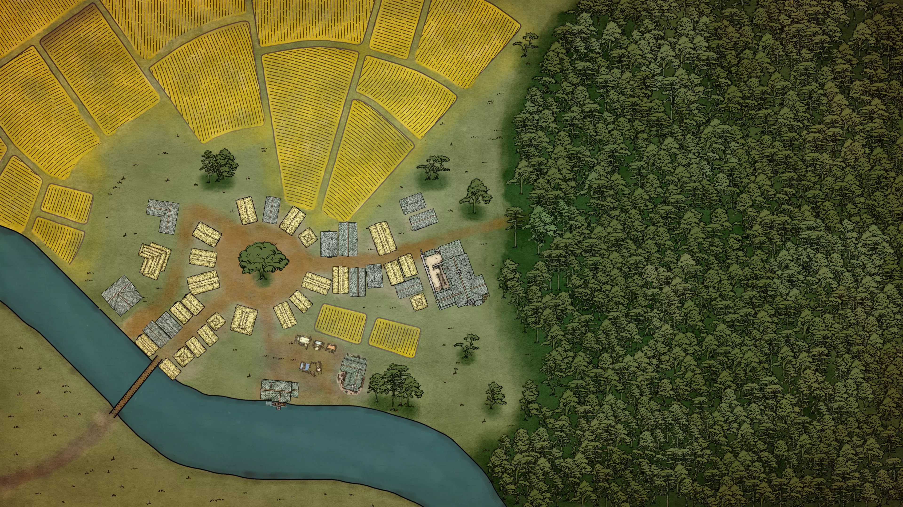

Welcome to Valoria
The chronicle of our party's adventures across the world of Valoria — updated as events unfold.
Current Status
Location: Stonebridge — West Gate inner market
Party Level: 6
Situation: Wanted by the Gilded Mantle. Just entered the city. A halfling child has spotted a posted WANTED notice and is pointing at the party.
"The quiet stream still reaches the sea."
The druid Maelis of Greenglen once called us the Protectors of Greenglen. Whether that name sticks is another matter.
The Party

Romlim Underbringer
Race/Class: Dwarf — Wild Magic Barbarian
From: Durkoth's Forge
Background: Master smith and soldier. His family forge was destroyed and an ancient artefact stolen from beneath its foundations. He set out to find the man responsible — and found Calder Duskwhisper. That grudge is settled. The ones who sent Calder are not.
Notable: Has a habit of marking significant moments in a very specific way.

Parineeti Elfreide
Race/Class: Half-Elf — Swarmkeeper Ranger
From: Lathloria (merchant family)
Background: Left her family's mercantile empire for the wilds. Bonded with Shadow. Her mentor Kaelen Myrrath's resting place was desecrated by Calder's corruption — that trail led her here. Her family has connections to shadowy organisations she is only beginning to understand.

Gwen
Race/Class: High Elf — Arcane Trickster Rogue
From: Lathloria (noble house)
Background: Youngest daughter of a noble family. Trained in diplomacy and court etiquette — but craved a different kind of life. Mentored by a master rogue. Expert infiltrator operating under a false name. Her family, too, has complicated ties to organisations she is just learning exist.

Shadow (Lord Phelan)
Nature: Fey Wolf / Companion
Background: Not a natural creature. The Fey confirmed he should not exist in this world in the way he does. His white fur shimmers faintly. He is bonded to Parineeti — a bond the Fey called "a rare gift, not theft." The Fey Court named him Lord Phelan. He communicates telepathically with Parineeti and can step between places in an instant.
Eilwynn — Deceased
Race/Class: Druid
Status: Fallen hero. Murdered by Shadow Druids in Greenglen on the first night. Avenged. Pissed on by Romlim.
Known NPCs
People the party has actually met. The world is full of others yet to be encountered.
Greenglen


Plowmere



The Silent Accord

Enemies & Threats



Locations

Greenglen
A small farming village saved from Shadow Druid corruption. Home of the real Maelis and Elda. Where the adventure began — and where Eilwynn fell.


Plowmere
A grain-trading town along the river road north. Drought solved. Grain smuggling and iron sabotage exposed. The party owns a four-bed house here, next to Dain's forge.


The Fenlow Farmstead
A ruined farm west of Plowmere. Haunted by a Lantern Spirit connected to an old tragedy. Cleansed through ritual. Source of several magical items.

The Unfinished Monument
An ancient ruin south of Plowmere, built by a civilisation that predates current history. Contains a sealed portal and mechanical Sentinel constructs. The party activated and then closed it. The Etherion Core was recovered here — as was something else that followed them out.

Stonebridge
A large fortified city straddling the River Elaris — the primary trade route between the agricultural south and the capital. Controlled by House Vael and their Gilded Mantle militia. Currently under a tightened security decree. The Great Stone Bridge is its landmark: ancient dwarven engineering, always loud, always moving. The party just arrived. Wanted posters are already up.

Durkoth's Forge
The dwarven capital, deep in the Ironclad Mountains. Accessible only through Frostfire Pass. The entire city is built around the sacred act of forging — every hammer-strike a prayer to Thulmir, god of the forge. The Underbringer family forge was here, in the Heart — the city's great crafting district. Destroyed. The cause is not fully understood.

Lathloria
An elven city — home to the Anorakire noble house (Gwen's family) and, some distance away, the Elfreide merchant family (Parineeti's). The Whispering Woods lie nearby. Both families have ties that are proving more complicated than either PC knew.
Quest Log
Active
- Active Survive Stonebridge: Inside the walls. Wanted. No safe house yet. The clock is already ticking.
- Active The Warren: A Thieves' Cant note found at the Greenglen mill read: "Operations active. Await instructions at the Warren. Maintain discretion. Keep grain flowing." The Warren is somewhere north. Its nature is unknown.
- Active The Core: The crystalline sphere from the Monument is in the party's possession and bonded to them. What it is, and what it is for, is not yet understood.
- Active The Planar Wound: The Fey charged the party with investigating a wound in the fabric of the world — and a name: Zurakan. The visions at the Chiming Hollow may be part of this.
Completed
- Completed The Greenglen Crisis: Exposed the doppelgangers, rescued Maelis and Elda, defeated Calder Duskwhisper.
- Completed The Drought: Appeased the Nyad at Murmuring Brook. Town water restored.
- Completed The Lantern Spirit: Investigated the Fenlow Farm haunting. Performed the banishment ritual.
- Completed The Blacksmith's Dilemma: Infiltrated the Old Smelter Route. Defeated Gregor Vael. Recovered alchemical evidence of iron sabotage (Compound CX-3). Evidence handed to Liris Vahl.
- Completed Harvest Hoarders: Exposed Bram Calloway's grain skimming and the northern smuggling detour. Handed him to authorities.
- Completed The Call of the Shadowed Glade: Completed the Fey trial. Parineeti and Shadow's bond was confirmed and named. The party received a charge from the Fey Court.
Notable Loot & Items
Magical Items
- The Etherion Core: A crystalline sphere of ancient origin. Bonded to the party. Its purpose is unknown. Shared.
- Ravager's Crescent: +1 Greataxe. Blackened steel. Romlim.
- Fenlow's Warding Shawl: Resistance to necrotic damage. Romlim.
- Pendant of the Second Breath: Auto-stabilise once per day. Parineeti.
- Ring of Shadows: Invisibility once per day, +1 to Stealth. Parineeti.
- Whisper Blade: Short sword. Modified by Romlim for free-action deployment. Gwen.
- Shadowbranch Shortbow: +1 Shortbow. Can cast Silence. Gwen.
- Gloves of Thievery: Bonus to Sleight of Hand and lockpicking. Gwen.
- Ring of Protection: +1 AC. Gwen.
Key Documents & Evidence
- Gregor's Journal: Encrypted notes on the "Green Glen Initiative." Handed to Liris Vahl.
- CX-3 Vials: Samples of the iron-tainting alchemical compound. Handed to Liris Vahl.
- The Warren Note: Thieves' Cant message found at the Greenglen mill: "Operations active. Await instructions at the Warren. Maintain discretion. Keep grain flowing."
- Encrypted Sending Stone: Recovered from the Vael Retribution Squad ambush on the road. Mentions "Theta Group" and the initials "V.H."
Lore & History
The Etherions
An ancient civilisation that predates everything the party knows. They built the Unfinished Monument, the Sentinel constructs, and the Etherion Core. Their technology is unlike modern magic — mechanical, crystalline, incomprehensible in function. At some point something went catastrophically wrong. Whatever they did tore through the fabric of reality in an event those who know of it call The Fall. The Silent Accord's agent Liris Vahl tracks the remnants of Etherion sites and contains what escaped.
Something from the Monument followed the party out. It calls itself — or was called — Flick.
The Architect of Change
An entity that appeared the moment Calder Duskwhisper was killed. It did not seem surprised. It had many eyes — opening and closing across its body — and shifting features. It spoke in a voice that sounded like several voices at once, directly into the party's minds.
"The bonds weaken, the fractures grow... my master's will moves ever closer to fruition."
"Remember this day, for it marks only the beginning."
It serves something. What that something is has not yet been revealed — only glimpsed.
Zurakan
A name given to the party by the Fey Court. They spoke of his stirring — and charged the party with investigating both the planar wound and what his return might mean. Parineeti had a vision at the Chiming Hollow of an enormous lightning-wreathed figure. The connections are not yet clear.
The Chiming Hollow Visions
On the road north to Stonebridge, the party passed through a ruin of ringing stone called the Chiming Hollow. Each party member received a vision. The details differ — mountains, a dark shape kneeling, a pyramid in sand — but all feel connected to the same unfolding truth. None have been fully explained.
Episode Guide
Arc 1 — The Greenglen Crisis (Episodes 1–8)
- Ep 1–3: Arrival in Greenglen during the Spring Blessing. Corrupted spirits. Eilwynn murdered overnight.
- Ep 4–5: Investigation into Calder Duskwhisper. Encounters with Shadow Druids and bandits in the Old Forest. Party reaches Level 3.
- Ep 6: Discovery that Maelis and Elda had been replaced by doppelgangers. Rescue from a cave.
- Ep 7: Final confrontation with Calder Duskwhisper at the Ruined Temple. Killed by Romlim. The Architect of Change appeared immediately after.
- Ep 8: Return to Greenglen. The real Maelis and Elda killed their doppelgangers. Party named "Protectors of Greenglen." Reached Level 5.
Arc 2 — The Road & Plowmere (Episodes 9–18)
- Ep 9: The journey north. Visions at the Chiming Hollow.
- Ep 10: Arrival in Plowmere. Drought investigation — the Nyad at Murmuring Brook.
- Ep 11: The Unfinished Monument. The Etherion Core recovered. Flick emerged. First meeting with Liris Vahl.
- Ep 12–13: The Fenlow Farmstead haunting. The Lantern Spirit banished.
- Ep 14–16: Uncovering the grain smuggling and iron sabotage. Raid on the Old Smelter Route. Gregor Vael defeated.
- Ep 17: Rewards and the house gift. Deal struck with Liris Vahl — all Vael evidence exchanged for West Gate credentials.
- Ep 18: The Fey Trial in the Shadowed Glade. Parineeti and Shadow's bond confirmed. The party charged by the Fey Court. Entry into Stonebridge — and the WANTED poster.